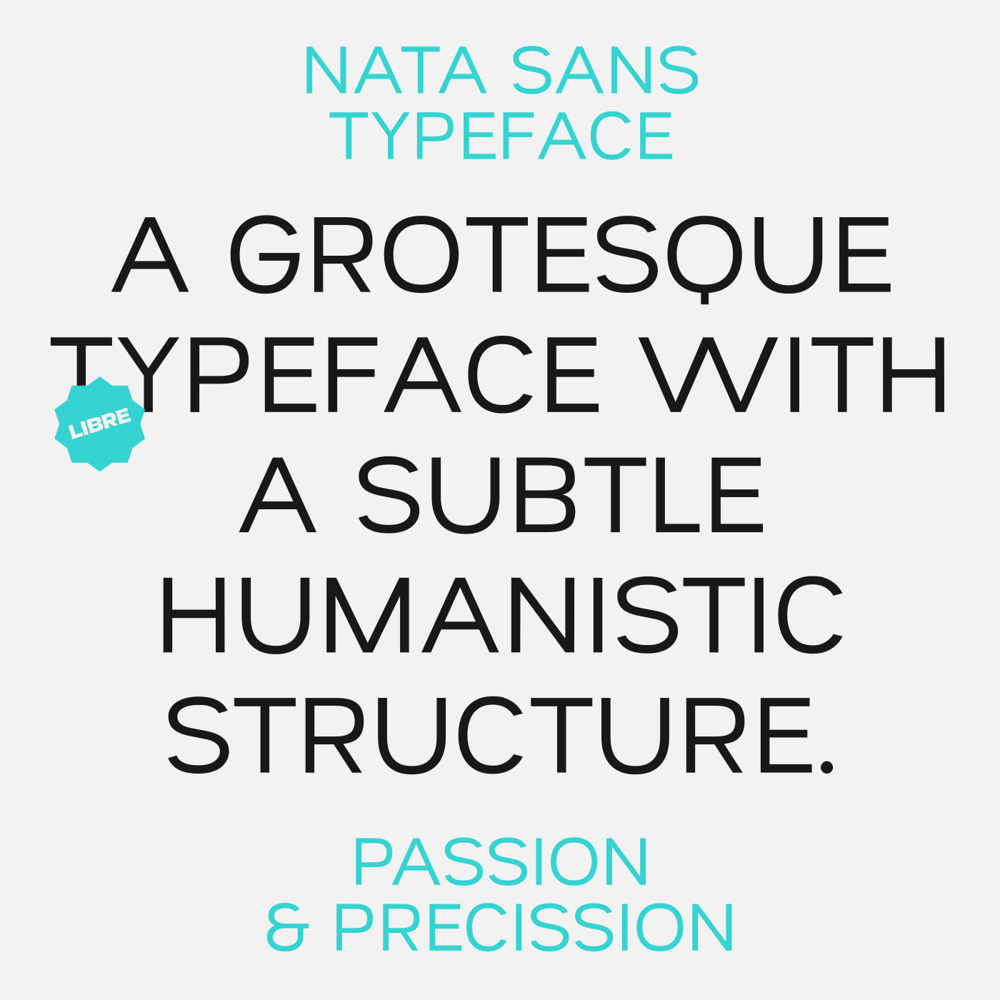

Nata Sans is a grotesque sans-serif typeface with a subtle humanist tone, designed by Daniel Uzquiano Cruz.
It was developed with user interfaces in mind, featuring a generous x-height, wide glyphs, and short ascenders and descenders that promote a relaxed and readable rhythm. Nata Sans presents a restrained yet distinct personality, making it a viable alternative to Helvetica in both digital and print contexts.
The typeface includes nine predefined weights from Thin to Black, and is available as a variable font with a weight axis ranging from 100 to 900. All weights interpolate smoothly thanks to three master drawings and cover 1022 glyphs.
Nata Sans supports 219 Latin-based languages spoken across 212 countries. It meets 100% of the Google Fonts Latin Plus character set, making it fully equipped for a wide range of global applications.
It also supports Latin, including Vietnamese, and Cyrillic scripts, and implements 18 OpenType features, including stylistic alternates, localized forms, case-sensitive punctuation, tabular and old-style figures, fractions, superscripts, subscripts, and more. Features such as calt, ss01, locl, and kern enhance typographic flexibility across platforms.
The font is released under the SIL Open Font License and is actively maintained on GitHub
